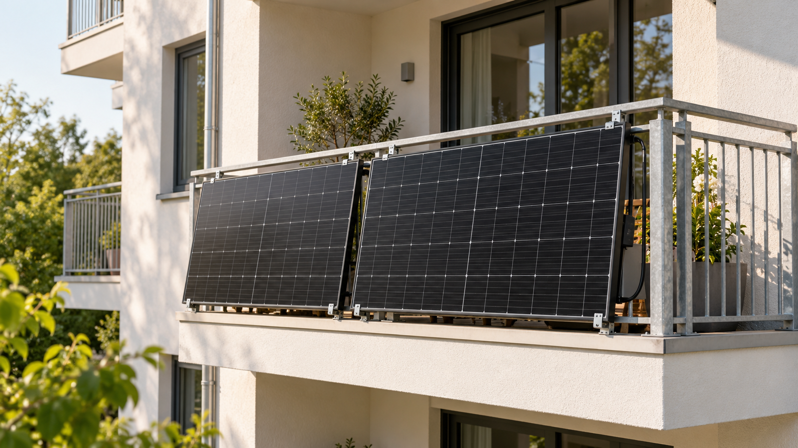
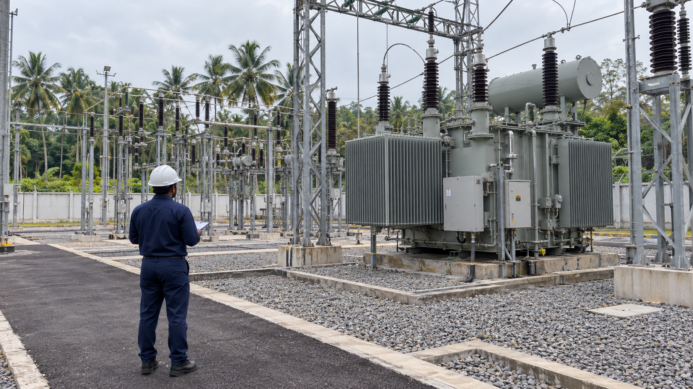

05/2025 — heute
Akademischer Mitarbeiter
INES · Hochschule Offenburg
Elektrische Messtechnik, historische Prüfdaten und die Integration eines automatisierten dreiphasigen Energiezähler-Prüflabors.
Details ansehenLinson Philip / Portfolio
Elektrotechnische Praxis und angewandte Forschung — vier Stationen mit unterschiedlichen Perspektiven auf Energiesysteme.
05/2025 — heute
INES · Hochschule Offenburg
Elektrische Messtechnik, historische Prüfdaten und die Integration eines automatisierten dreiphasigen Energiezähler-Prüflabors.
Details ansehen09/2024 — 02/2025
Livarsa GmbH · Hochschule Offenburg
Messbasierte Modellierung eines passiven elektrischen Effizienzfilters zur Untersuchung seines Betriebsverhaltens und Energieeinsparpotenzials.
Details ansehen12/2023 — 09/2024

KI-generiertes SymbolbildINES · Hochschule Offenburg
Praktische Unterstützung bei der Installation und Überwachung von Mikro-PV-Anlagen mit anschließender Auswertung elektrischer Betriebsdaten.
Details ansehen09/2018 — 10/2021

KI-generiertes SymbolbildKerala State Electricity Board · Indien
Praktische Betriebserfahrung in 11–110-kV-Umspannwerken mit Transformatoren, Schaltanlagen, Schutzsystemen und Hilfsversorgung.
Details ansehenStudium
10/2023 — 02/2025
Hochschule Offenburg
08/2014 — 07/2018
University of Kerala